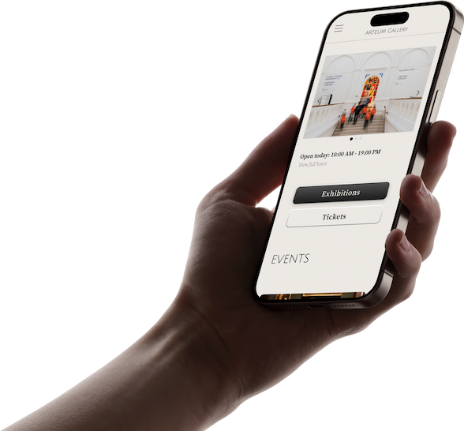
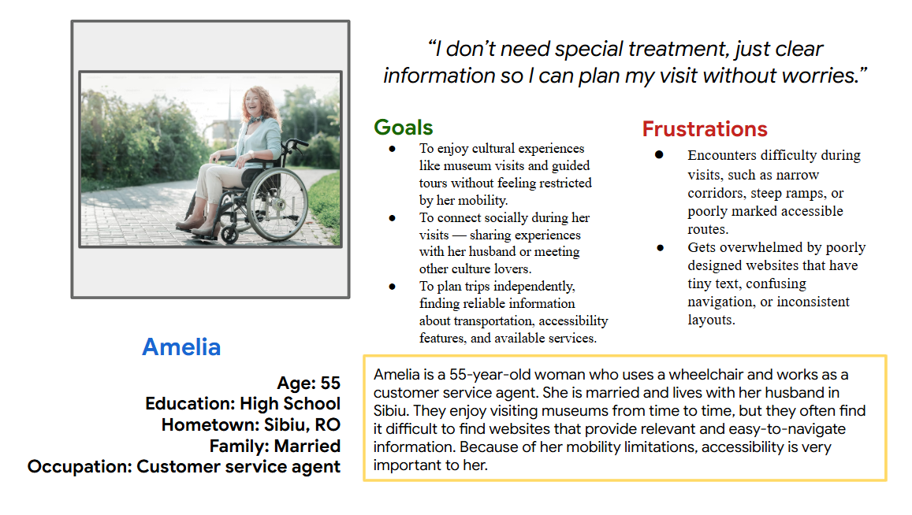
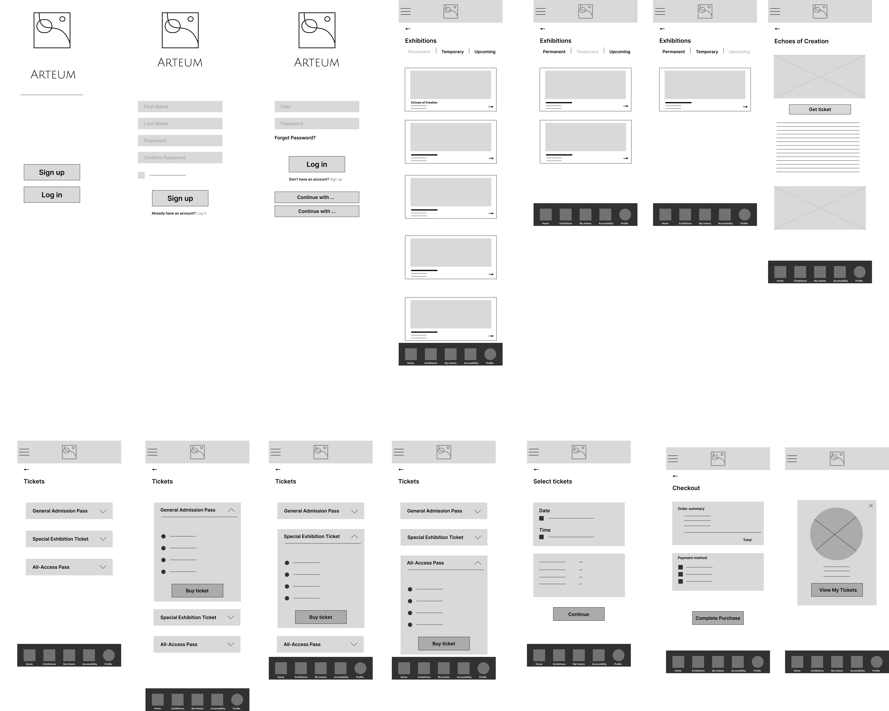
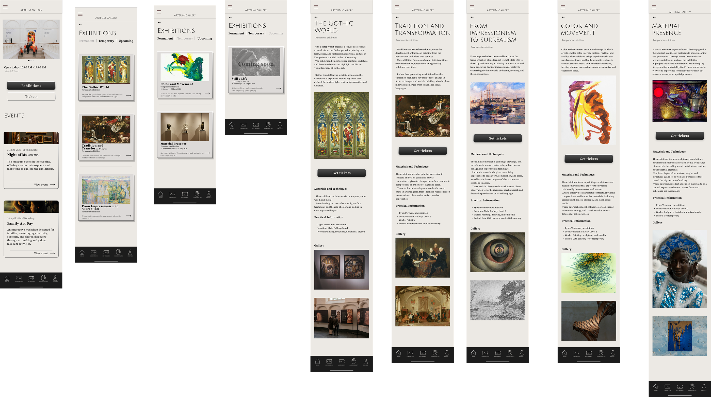

UX/UI CASE STUDY
Making museum visits easier through clear navigation and accessible information.

Arteum Mobile is a museum companion app designed to help visitors explore exhibitions, access accessibility information, and plan their visit with confidence. The project focused on simplifying navigation and making essential information easier to find.
Many museum websites and apps overwhelm users with cluttered layouts and scattered information. Visitors often struggle to find exhibitions, accessibility details, opening hours, and ticket options before their visit.
User interviews revealed that visitors value simplicity and easy access to essential information more than advanced features. Research showed that clear navigation and accessible content are crucial for creating a stress-free museum experience.

Research revealed that visitors often struggled to find exhibition information quickly and found ticket purchasing processes confusing. Accessibility details were difficult to locate, while important visitor information was frequently scattered across different screens. These findings highlighted the need for a clearer structure, simplified navigation, and easier access to essential information.
The wireframes focused on reducing complexity and ensuring users could quickly access exhibitions, tickets, and accessibility information. Navigation was simplified through a clear information hierarchy and intuitive screen structure.

Two rounds of usability testing were conducted to evaluate navigation, information visibility, and overall usability. Participants highlighted opportunities to improve visual hierarchy, strengthen navigation clarity, and make important information easier to discover.
Based on user feedback, exhibition cards were enhanced with short descriptions, ticket purchasing became accessible from multiple screens, and the overall information architecture was refined. These changes improved clarity, accessibility, and confidence throughout the experience.

This project reinforced the importance of validating assumptions through user research rather than relying on initial ideas. It demonstrated how simplicity and clarity often create a stronger user experience than complex features and highlighted the value of iterative design and usability testing.